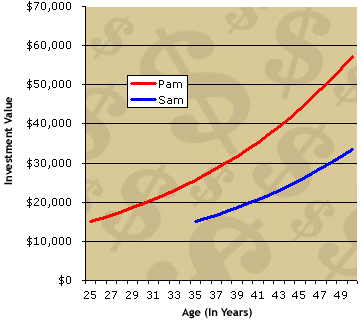
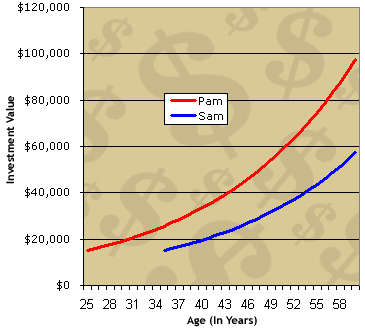
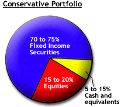
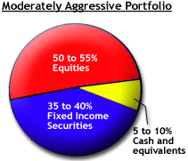

Have you ever wondered how the rich got their wealth and then kept it growing? Do you dream of retiring early (or of being able to retire at all)? Do you know that you should invest, but don't know where to start?
If you answered "yes" to any of the above questions, you've come to the right place. In this tutorial we will cover the practice of investing from the ground up. The world of finance can be extremely intimidating, but we firmly believe that the stock market and greater financial world won't seem so complicated once you learn some of the lingo and major concepts.
We should emphasize, however, that investing isn't a get-rich-quick scheme. Taking control of your personal finances will take work, and, yes, there will be a learning curve. But the rewards will far outweigh the required effort. Contrary to popular belief, you don't have to let banks, bosses or investment professionals push your money in directions that you don't understand. After all, no one is in a better position than you are to know what is best for you and your money.
Regardless of your personality type, lifestyle or interests, this tutorial will help you to understand what investing is, what it means and how time earns money through compounding. But it doesn't stop there. This tutorial will also teach you about the building blocks of the investing world and the markets, give you some insight into techniques and strategies and help you think about which investing strategies suit you best. So do yourself a lifelong favor and keep reading.
One last thing: remember: there are no "stupid" questions. If after reading this tutorial you still have unanswered questions, we'd love to hear from you.
The act of committing money or capital to an endeavor with the expectation of obtaining an additional income or profit.
It's actually pretty simple: investing means putting your money to work for you. Essentially, it's a different way to think about how to make money. Growing up, most of us were taught that you can earn an income only by getting a job and working. And that's exactly what most of us do. There's one big problem with this: if you want more money, you have to work more hours. However, there is a limit to how many hours a day we can work, not to mention the fact that having a bunch of money is no fun if we don't have the leisure time to enjoy it
You can't create a duplicate of yourself to increase your working time, so instead, you need to send an extension of yourself - your money - to work. That way, while you are putting in hours for your employer, or even mowing your lawn, sleeping, reading the paper or socializing with friends, you can also be earning money elsewhere. Quite simply, making your money work for you maximizes your earning potential whether or not you receive a raise, decide to work overtime or look for a higher-paying job.
There are many different ways you can go about making an investment. This includes putting money into stocks, bonds, mutual funds, or real estate (among many other things), or starting your own business. Sometimes people refer to these options as "investment vehicles," which is just another way of saying "a way to invest." Each of these vehicles has positives and negatives, which we'll discuss in a later section of this tutorial. The point is that it doesn't matter which method you choose for investing your money, the goal is always to put your money to work so it earns you an additional profit. Even though this is a simple idea, it's the most important concept for you to understand.
What Investing Is Not
Investing is not gambling. Gambling is putting money at risk by betting on an uncertain outcome with the hope that you might win money. Part of the confusion between investing and gambling, however, may come from the way some people use investment vehicles. For example, it could be argued that buying a stock based on a "hot tip" you heard at the water cooler is essentially the same as placing a bet at a casino.
True investing doesn't happen without some action on your part. A "real" investor does not simply throw his or her money at any random investment; he or she performs thorough analysis and commits capital only when there is a reasonable expectation of profit. Yes, there still is risk, and there are no guarantees, but investing is more than simply hoping Lady Luck is on your side.
Why Bother Investing?
Obviously, everybody wants more money. It's pretty easy to understand that people invest because they want to increase their personal freedom, sense of security and ability to afford the things they want in life.
However, investing is becoming more of a necessity. The days when everyone worked the same job for 30 years and then retired to a nice fat pension are gone. For average people, investing is not so much a helpful tool as the only way they can retire and maintain their present lifestyle.
Whether you live in the U.S., Canada, or pretty much any other country in the industrialized Western world, governments are tightening their belts. Almost without exception, the responsibility of planning for retirement is shifting away from the state and towards the individual. There is much debate over how safe our old-age pension programs will be over the next 20, 30 and 50 years. But why leave it to chance? By planning ahead you can ensure financial stability during your retirement. (For more, see Retirement Planning tutorial and for Canadians the Registered Retirement Savings Plan (RRSP) tutorial.)
Now that you have a general idea of what investing is and why you should do it, it's time to learn about how investing lets you take advantage of one of the miracles of mathematics: compound interest.
Albert Einstein called compound interest "the greatest mathematical discovery of all time". We think this is true partly because, unlike the trigonometry or calculus you studied back in high school, compounding can be applied to everyday life.
The wonder of compounding (sometimes called "compound interest") transforms your working money into a state-of-the-art, highly powerful income-generating tool. Compounding is the process of generating earnings on an asset's reinvested earnings. To work, it requires two things: the re-investment of earnings and time. The more time you give your investments, the more you are able to accelerate the income potential of your original investment, which takes the pressure off of you.
To demonstrate, let's look at an example:
If you invest $10,000 today at 6%, you will have $10,600 in one year ($10,000 x 1.06). Now let's say that rather than withdraw the $600 gained from interest, you keep it in there for another year. If you continue to earn the same rate of 6%, your investment will grow to $11,236.00 ($10,600 x 1.06) by the end of the second year.
Because you reinvested that $600, it works together with the original investment, earning you $636, which is $36 more than the previous year. This little bit extra may seem like peanuts now, but let's not forget that you didn't have to lift a finger to earn that $36. More importantly, this $36 also has the capacity to earn interest. After the next year, your investment will be worth $11,910.16 ($11,236 x 1.06). This time you earned $674.16, which is $74.16 more interest than the first year. This increase in the amount made each year is compounding in action: interest earning interest on interest and so on. This will continue as long as you keep reinvesting and earning interest.
Starting Early
Consider two individuals, we'll name them Pam and Sam. Both Pam and Sam are the same age. When Pam was 25 she invested $15,000 at an interest rate of 5.5%. For simplicity, let's assume the interest rate was compounded annually. By the time Pam reaches 50, she will have $57,200.89 ($15,000 x [1.055^25]) in her bank account.
Pam's friend, Sam, did not start investing until he reached age 35. At that time, he invested $15,000 at the same interest rate of 5.5% compounded annually. By the time Sam reaches age 50, he will have $33,487.15 ($15,000 x [1.055^15]) in his bank account.
What happened? Both Pam and Sam are 50 years old, but Pam has $23,713.74 ($57,200.89 - $33,487.15) more in her savings account than Sam, even though he invested the same amount of money! By giving her investment more time to grow, Pam earned a total of $42,200.89 in interest and Sam earned only $18,487.15.
Editor's Note: For now, we will have to ask you to trust that these calculations are correct. In this tutorial we concentrate on the results of compounding rather than the mathematics behind it. (If you'd like to learn more about how the numbers work, see Understanding The Time Value Of Money.)
Both Pam and Sam's earnings rates are demonstrated in the following chart:
|  |
You can see that both investments start to grow slowly and then accelerate, as reflected in the increase in the curves' steepness. Pam's line becomes steeper as she nears her 50s not simply because she has accumulated more interest, but because this accumulated interest is itself accruing more interest.
Pam's line gets even steeper (her rate of return increases) in another 10 years. At age 60 she would have nearly $100,000 in her bank account, while Sam would only have around $60,000, a $40,000 difference!
When you invest, always keep in mind that compounding amplifies the growth of your working money. Just like investing maximizes your earning potential, compounding maximizes the earning potential of your investments - but remember, because time and reinvesting make compounding work, you must keep your hands off the principal and earned interest.
Investors can learn a lot from the famous Greek maxim inscribed on the Temple of Apollo's Oracle at Delphi: "Know Thyself". In the context of investing, the wise words of the oracle emphasize that success depends on ensuring that your investment strategy fits your personal characteristics.
Even though all investors are trying to make money, each one comes from a diverse background and has different needs. It follows that specific investing vehicles and methods are suitable for certain types of investors. Although there are many factors that determine which path is optimal for an investor, we'll look at two main categories: investment objectives and investing personality.
Investment Objectives
Generally speaking, investors have a few factors to consider when looking for the right place to park their money. Safety of capital, current income and capital appreciation are factors that should influence an investment decision and will depend on a person's age, stage/position in life and personal circumstances. A 75-year-old widow living off of her retirement portfolio is far more interested in preserving the value of investments than a 30-year-old business executive would be. Because the widow needs income from her investments to survive, she cannot risk losing her investment. The young executive, on the other hand, has time on his or her side. As investment income isn't currently paying the bills, the executive can afford to be more aggressive in his or her investing strategies.
An investor's financial position will also affect his or her objectives. A multi-millionaire is obviously going to have much different goals than a newly married couple just starting out. For example, the millionaire, in an effort to increase his profit for the year, might have no problem putting down $100,000 in a speculative real estate investment. To him, a hundred grand is a small percentage of his overall worth. Meanwhile, the couple is concentrating on saving up for a down payment on a house and can't afford to risk losing their money in a speculative venture. Regardless of the potential returns of a risky investment, speculation is just not appropriate for the young couple.
As a general rule, the shorter your time horizon, the more conservative you should be. For instance, if you are investing primarily for retirement and you are still in your 20s, you still have plenty of time to make up for any losses you might incur along the way. At the same time, if you start when you are young, you don't have to put huge chunks of your paycheck away every month because you have the power of compounding on your side.
On the other hand, if you are about to retire, it is very important that you either safeguard or increase the money you have accumulated. Because you will soon be accessing your investments, you don't want to expose all of your money to volatility - you don't want to risk losing your investment money in a market slump right before you need to start accessing your assets.
Personality
What's your style? Do you love fast cars, extreme sports and the thrill of a risk? Or do you prefer reading in your hammock while enjoying the calmness, stability and safety of your backyard?
Peter Lynch, one of the greatest investors of all time, has said that the "key organ for investing is the stomach, not the brain". In other words, you need to know how much volatility you can stand to see in your investments. Figuring this out for yourself is far from an exact science; but there is some truth to an old investing maxim: you've taken on too much risk when you can't sleep at night because you are worrying about your investments.
Another personality trait that will determine your investing path is your desire to research investments. Some people love nothing more than digging into financial statements and crunching numbers. To others, the terms balance sheet, income statement and stock analysis sound as exciting as watching paint dry. Others just might not have the time to plow through prospectuses and financial statements.
Putting It All Together: Your Risk Tolerance
By now it is probably clear to you that the main thing determining what works best for an investor is his or her capacity to take on risk.
We've mentioned some core factors that determine risk tolerance, but remember that every individual's situation is different and that what we've mentioned is far from a comprehensive list of the ways in which investors differ from one another. The important point of this section is that an investment is not the same to all people. Keep this in the back of your mind for upcoming sections of this tutorial.
If you are not sure about how you would react to market movements, we can suggest one good starting point: try starting up a mock portfolio in this free investing simulator, which gives you $100,000 of virtual money in an account that tracks the real stock market. The simulated experience of investing can really help you know your head, your habits and your stomach before you invest even one real dollar.
An important fact about investing is that there are no indisputable laws, nor is there one correct way to go about it. Furthermore, within the vast array of different investing styles and strategies, two opposite approaches may both be successful at the same time.
One explanation for the appearance of contradictions in investing is that economics and finance are social (or soft) sciences. In a hard science, like physics or chemistry, there are precise measurements and well-defined laws that can be replicated and demonstrated time and time again in experiments. In a social science, it's impossible to "prove" anything. People can develop theories and models of how the economy works, but they can't put an economy into a lab and perform experiments on it. (To learn more, see Is finance an art or a science?)
In fact, humans, the main subject of the study of the social sciences are unreliable and unpredictable by nature. Just as it is difficult for a psychologist to predict with 100% certainty how a single human mind will react to a particular circumstance, it is difficult for a financial analyst to predict with 100% certainty how the market (a large group of humans) will react to certain news about a company. Humans are emotional, and as much as we'd like to think we are rational, much of the time our actions prove otherwise.
Economists, academics, research analysts, fund managers and individual investors often have different and even conflicting theories about why the market works the way it does. Keep in mind that these theories are really nothing more than opinions. Some opinions might be better thought out than others, but at the end of the day, they are still just opinions.
Take the following example of how contradictions play out in the markets:
Sally believes that the key to investing is to buy small companies that are poised to grow at extremely high rates. Sally is therefore always watching for the newest, most cutting-edge technology, and typically invests in technology and biotech firms, which sometimes aren't even making a profit. Sally doesn't mind because these companies have huge potential.
John isn't ready to go spending his hard-earned dollars on what he sees as an unproven concept. He likes to see firms that have a solid track record and he believes that the key to investing is to buy good companies that are selling at "cheap" prices. The ideal investment for John is a mature company that pays out a large dividend, which he feels has high-quality management that will continue to deliver excellent returns to shareholders year after year.
So, which investor is superior?
The answer is neither. Sally and John have totally different investing strategies, but there is no reason why they can't both be successful. There are plenty of stable companies out there for John, just as there are always entrepreneurs creating new companies that would attract Sally. The approaches we described here are those of the two most common investing strategies. In investing lingo, Sally is a growth investor and John is a value investor.
Although these theories appear to contradict one another, each strategy has its merits and may have aspects that are suitable for certain investors. Your goal is to be informed enough to understand and analyze what you hear. Then you can decide which theories fit with your investing personality.
We've already mentioned that there are many ways to invest your money. Of course, to decide which investment vehicles are suitable for you, you need to know their characteristics and why they may be suitable for a particular investing objective.
Bonds
Grouped under the general category called fixed-income securities, the term bond is commonly used to refer to any securities that are founded on debt. When you purchase a bond, you are lending out your money to a company or government. In return, they agree to give you interest on your money and eventually pay you back the amount you lent out.
The main attraction of bonds is their relative safety. If you are buying bonds from a stable government, your investment is virtually guaranteed, or risk-free. The safety and stability, however, come at a cost. Because there is little risk, there is little potential return. As a result, the rate of return on bonds is generally lower than other securities. (The Bond Basics tutorial will give you more insight into these securities.)
Stocks
When you purchase stocks, or equities, as your advisor might put it, you become a part owner of the business. This entitles you to vote at the shareholders' meeting and allows you to receive any profits that the company allocates to its owners. These profits are referred to as dividends.
While bonds provide a steady stream of income, stocks are volatile. That is, they fluctuate in value on a daily basis. When you buy a stock, you aren't guaranteed anything. Many stocks don't even pay dividends, in which case, the only way that you can make money is if the stock increases in value - which might not happen.
Compared to bonds, stocks provide relatively high potential returns. Of course, there is a price for this potential: you must assume the risk of losing some or all of your investment. (For additional reading, see Stock Basics tutorial and Guide to Stock Picking Strategies.)
Mutual Funds
A mutual fund is a collection of stocks and bonds. When you buy a mutual fund, you are pooling your money with a number of other investors, which enables you (as part of a group) to pay a professional manager to select specific securities for you. Mutual funds are all set up with a specific strategy in mind, and their distinct focus can be nearly anything: large stocks, small stocks, bonds from governments, bonds from companies, stocks and bonds, stocks in certain industries, stocks in certain countries, etc.
The primary advantage of a mutual fund is that you can invest your money without the time or the experience that are often needed to choose a sound investment. Theoretically, you should get a better return by giving your money to a professional than you would if you were to choose investments yourself. In reality, there are some aspects about mutual funds that you should be aware of before choosing them, but we won't discuss them here. (You can, check out the details in the Mutual Fund Basics tutorial.)
Alternative Investments: Options, Futures, FOREX, Gold, Real Estate, Etc.
So, you now know about the two basic securities: equity and debt, better known as stocks and bonds. While many (if not most) investments fall into one of these two categories, there are numerous alternative vehicles, which represent the most complicated types of securities and investing strategies. (Go through our Forex Walkthrough which goes from beginner to advanced.)
The good news is that you probably don't need to worry about alternative investments at the start of your investing career. They are generally high-risk/high-reward securities that are much more speculative than plain old stocks and bonds. Yes, there is the opportunity for big profits, but they require some specialized knowledge. So if you don't know what you are doing, you could get yourself into a lot of trouble. Experts and professionals generally agree that new investors should focus on building a financial foundation before speculating. (For more on how levels of risk correspond to certain investments, check out: Determining Risk And The Risk Pyramid.)
It's good to clarify how securities are different from each other, but it's even more important to understand how their different characteristics can work together to accomplish an objective.
The Portfolio
A portfolio is a combination of different investment assets mixed and matched for the purpose of achieving an investor's goal(s). Items that are considered a part of your portfolio can include any asset you own - from real items such as art and real estate, to equities, fixed-income instruments and their cash and equivalents. For the purpose of this section, we will focus on the most liquid asset types: equities, fixed-income securities and cash and equivalents.
An easy way to think of a portfolio is to imagine a pie chart, whose portions each represent a type of vehicle to which you have allocated a certain portion of your whole investment. The asset mix you choose according to your aims and strategy will determine the risk and expected return of your portfolio.
Basic Types of Portfolios
In general, aggressive investment strategies - those that shoot for the highest possible return - are most appropriate for investors who, for the sake of this potential high return, have a high risk tolerance (can stomach wide fluctuations in value) and a longer time horizon. Aggressive portfolios generally have a higher investment in equities.
The conservative investment strategies, which put safety at a high priority, are most appropriate for investors who are risk averse and have a shorter time horizon. Conservative portfolios will generally consist mainly of cash and cash equivalents, or high-quality fixed-income instruments.
To demonstrate the types of allocations that are suitable for these strategies, we'll look at samples of both a conservative and a moderately aggressive portfolio.
Note that the terms cash and the money market refer to any short-term, fixed-income investment. Money in a savings account and a certificate of deposit (CD), which pays a bit higher interest, are examples. (You can read more about the money market in the Money Market Tutorial.)
The main goal of a conservative portfolio strategy is to maintain the real value of the portfolio, or to protect the value of the portfolio against inflation. The portfolio you see here would yield a high amount of current income from the bonds and would also yield long-term capital growth potential from the investment in high quality equities.
|  |
A moderately aggressive portfolio is meant for individuals with a longer time horizon and an average risk tolerance. Investors who find these types of portfolios attractive are seeking to balance the amount of risk and return contained within the fund.
The portfolio would consist of approximately 50-55% equities, 35-40% bonds, 5-10% cash and equivalents.
|  |
You can further break down the above asset classes into subclasses, which also have different risks and potential returns. For example, an investor might divide the equity portion between large companies, small companies and international firms. The bond portion might be allocated between those that are short-term and long-term, government versus corporate debt, and so forth. More advanced investors might also have some of the alternative assets such as options and futures in the mix. As you can see, the number of possible asset allocations is practically unlimited.
Why Portfolios?
It all centers around diversification. Different securities perform differently at any point in time, so with a mix of asset types, your entire portfolio does not suffer the impact of a decline of any one security. When your stocks go down, you may still have the stability of the bonds in your portfolio.
There have been all sorts of academic studies and formulas that demonstrate why diversification is important, but it's really just the simple practice of "not putting all your eggs in one basket." If you spread your investments across various types of assets and markets, you'll reduce the risk of catastrophic financial losses.
We've introduced many topics in this tutorial:
The Strategy
For our example, let's look at a fictional investor named Melanie. Melanie is a twenty-something who is relatively new to investing. Melanie knows that she wants to invest, but isn't sure just how to do it. Her knowledge of finances is good, but she has no desire to spend her free time poring over financial statements (or losing sleep because of her investments).
After checking out this tutorial and reading more about stocks and mutual funds, Melanie learns that there are two basic styles of portfolio management: passive and active. Each of these styles results from a different approach to the market. The goal of active management is to select securities that will perform better than the overall market. For example, when a mutual fund manager analyzes a company's financial statements to determine if the stock is suitable for the fund, he or she is actively managing the portfolio.
A passive investor on the other hand has no desire to try to beat the market. Instead, relying on the stock market's history of increasing over the long term, the passive investor, perhaps believing that trying to beat the market is too much work or even futile, will simply purchase a security such as an index fund, which mirrors a benchmark used to track the performance of a market.
Melanie decides that passive investing is more her style, so her investment vehicle of choice is the S&P 500 index fund. This is a mutual fund that is indexed to the S&P 500, which is composed of the 500 largest companies in the U.S.
Why an index fund?
Putting the Concepts to Work
And that's about all there is to it. It's pretty simple stuff, actually. And despite the ease of setting up a strategy like this, it allows Melanie to follow all the principles we've been discussing:
Perhaps most importantly, indexing in the long term doesn't do any damage. There are plenty of ways to lose money, whether in speculative investments or through excessive fees in mutual funds. On the other hand, it's possible to be too risk averse. If you put your savings under a mattress, we guarantee it's not going to increase in value.
There are many other alternatives out there. We strongly encourage you to explore them and see what works for you. But, for the average investor, the smart route includes saving regularly, keeping investment expenses down and being in the market for the long term. Whatever you do, keep the principles we've discussed in mind, and never stop trying to learn more.
{kind=link}
{kind=link}
{kind=link}
{kind=link}
{kind=link}